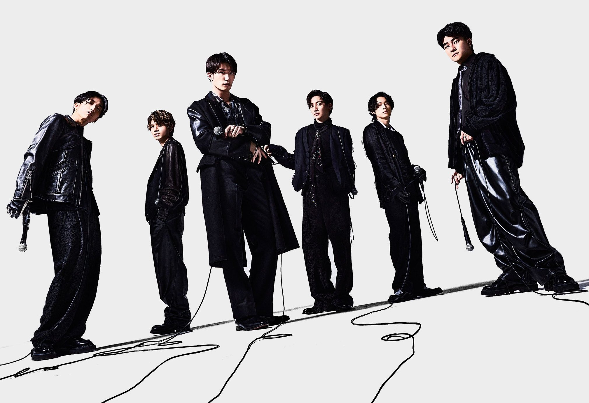

SixTONES

Let know more about SixTONES
SixTones (ストーンズ, stylized as SixTONES and pronounced "Stones")
is a Japanese idol boy band formed by Johnny & Associates in 2015
SixTones made their official debut on January 22, 2020
"stones" pronunciation refers to "diamond in the rough"
The name also refers to the six members, each with a distinctive tone, personality and sound
Members
Yugo Kochi (髙地優吾) - leader
Taiga Kyomoto (京本大我)
Juri Tanaka (田中樹)
Hokuto Matsumura (松村北斗)
Jesse (ジェシー)
Shintaro Morimoto (森本慎太郎)
Music
The First Song "Imitation Rain" composed and arranged by X Japan's Yoshiki
The Spring Song "Chillin" with you" with 3,187,925 views
The Summer Song "PARTY PEOPLE" with 36,699,204 views
The Autumn Song "ふたり" with 13,175,286 views
The Winter Song "Strawberry Breakfast" with 32,790,135 views
More About SixTONES
| Website |
Click and Go |
| YouTube |
link |
| OFFicial Website |
link |
| Instagram |
link |
| Twitter |
link |
9th Single「ABARERO」2023.4.12 release!!